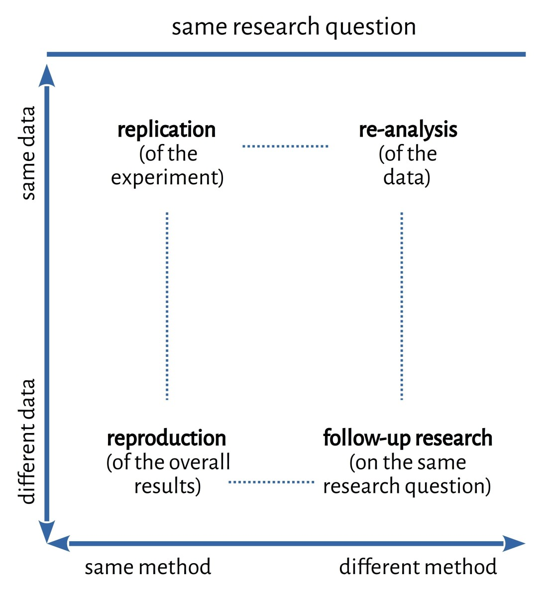
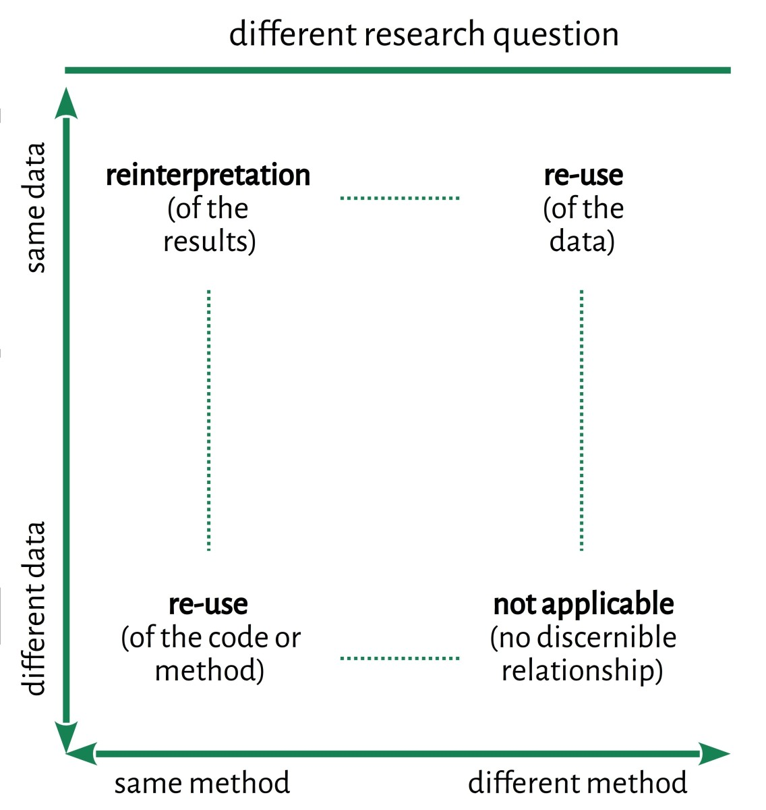

# A typology of replication studies <br/> <hr/> <br/> <p><strong>Christof Schöch (Trier, Germany)</strong></p> <br/> <p><strong>DH2020v | ADHO | July 20-25, 2020</strong></p> <p><a href="https://dh-trier.github.io/replication-typology/">dh-trier.github.io/replication-typology/</a></p> <br/> <hr/> <img height="55" data-src="img/basics/tcdh-slim.png"> <img height="50" data-src="img/basics/uni-trier.png"> <section data-audio-src="audio/opener.ogg"> -- ## Overview 1. [A typology of replicating research](#/2) 2. [What is such a typology useful for?](#/3) <section data-audio-src="audio/overview.ogg"> -- ## (1) A typology of replicating research <section data-audio-src="audio/typology-start.ogg"> -- #### Basis of the typology * Three key factors * research question * dataset * method / implementation * Each can be * identical * more or less similar * different <section data-audio-src="audio/typology-factors.ogg"> -- #### Typology (same research question)  <section data-audio-src="audio/typology-same.ogg"> -- #### Typology (different research question)  -- ## (2) What is such a typology useful for? -- #### Uses of the typology * structures the field * provides a clearly-defined terminology * defines systematic relations between the types * defines relation to benchmarking and evaluation * helps identify similar studies across disciplinary boundaries * contribute to establishing replication as part of CLS -- ## Thank you! Please also check out the other contributions to the panel! * Panel introduction * Karina van Dalen * Fotis Jannidis * Maria Antoniak * [Written abstract](https://hcommons.org/deposits/item/hc:30439/) * DH Commons discussion page